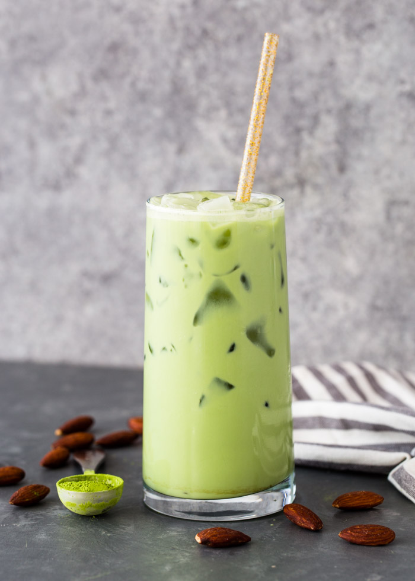

Matcha Latte
The Best Beverage You Will EVER Taste
February 20th, 2023 / By Jennifer Dinh
Have you ever tried matcha? Did you end up not liking it? Well, I am in the same boat as you...or so I thought. The first matcha I ever tasted was so bitter to me that I was so confused why all my other friends were so in love with matcha. It wasn't until my friend told me to try a Matcha Latte, that I fully understood why matcha was so loved. Matcha had then won my heart, and I will convert you to a matcha enthusiast soon enough!

What is Matcha Latte and What does it taste like?
Other than the obvious that matcha is a bright shade of green, it's specifically a grown Japanese green tea powder. The green tea powder is essential in making a matcha latte as it gives the flavoring. You blend the powder with any kind of milk of your choice, this can range from regular milk to almond milk! Matcha not only contains a small amount of caffeine, but it gives you vitamins, anti-oxidants, etc. A matcha latte can be used in a cold or hot drink giving a taste of a frothy milk drink that is sweet yet smooth with an umami flavor. It's hard to describe, so I advise you to try it for yourself!
Benefits of Matcha
- Having Purely White Teeth (Matcha Lattes Don't Stain Your Teeth)
- Gives You Energy (Without Having Middle Day Energy Crashes)
- Boosts Your Metabolism
- Keep Calm and Drink Matcha Lattes (It Literally Keeps You Calm)
Types of Drinks
The types of matcha latte drinks you could possibly make will blow your mind. It ranges from a regular iced matcha latte to a strawberry matcha latte, coconut matcha latte, mango matcha latte, etc! Adding syrups and cold foam will make your matcha latte even better!